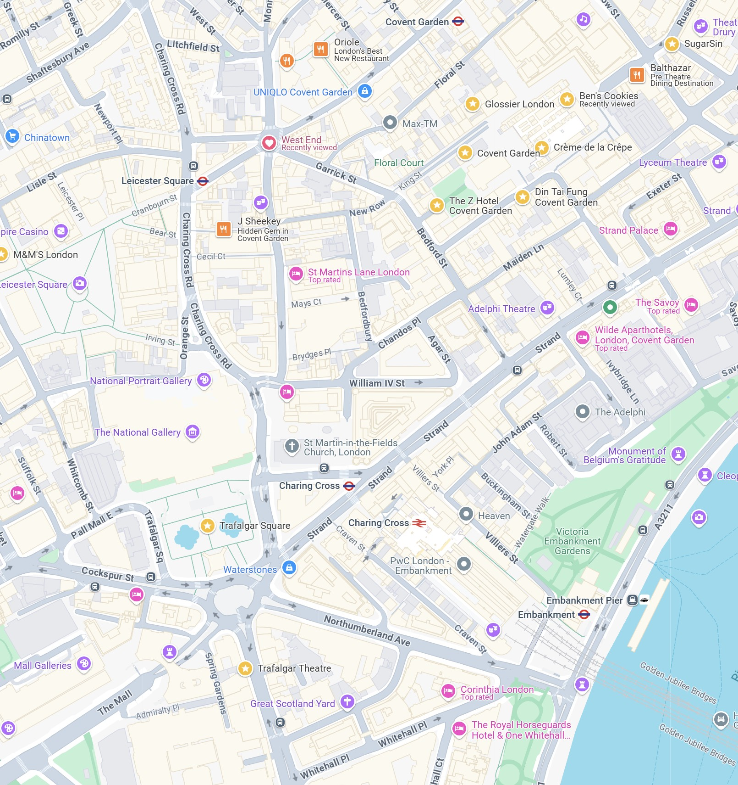
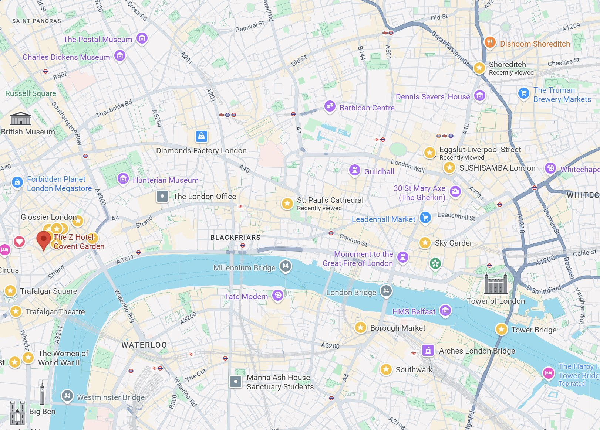
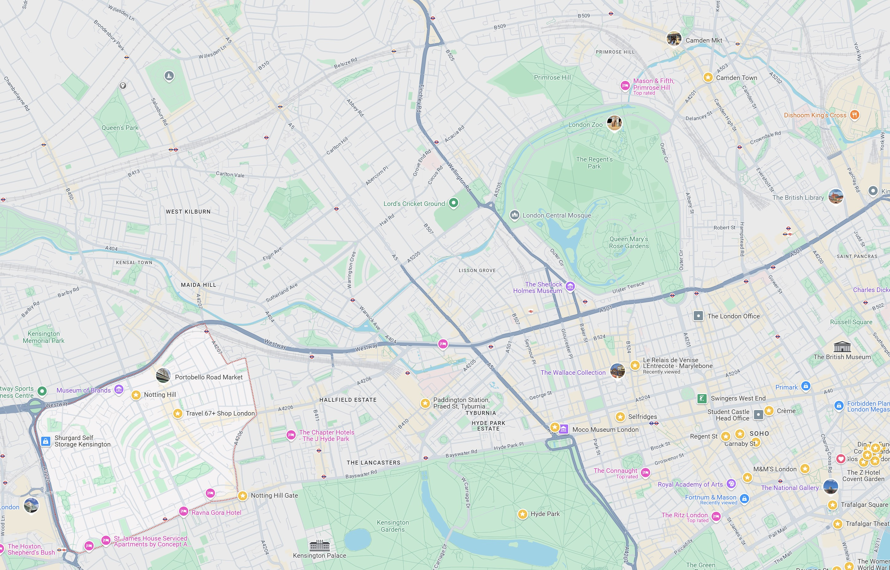

יום שבת: הגעה וערב הצגה
היום הראשון מתמקד בהגעה, התמקמות וטעימה ראשונה מהעיר עם סיבוב קצר באזור המלון וסיום עם הצגה מרימה בווסט אנד.

יום ראשון: אייקונים במרכז העיר ובילויים
יום עמוס בפארקים מלכותיים, אתרים אייקוניים, שופינג וערב של בילוי בווסט אנד.
יום שני: גורדי שחקים, שווקים ותצפיות
יום בגדה הדרומית ומזרח העיר, עם שווקים תוססים, נופים עוצרי נשימה ואוכל משובח.

יום שלישי: נוטינג היל וקמדן
נחקור את השכונות הצבעוניות והייחודיות של נוטינג היל וקמדן, נשקיע זמן בשווקים ובאווירה המיוחדת.

יום רביעי: מרכז העיר ואטרקציות ייחודיות
יום במרכז לונדון עם ביקור בתחנת כוח שהפכה למרכז בילוי, תה אחה"צ קלאסי וטיול באזור פיקדילי.

יום חמישי: יום חופשי ועזיבה
יום פנוי להשלמות, קניות אחרונות, ביקור חוזר במקום שאהבתן במיוחד, או פשוט מנוחה לפני הטיסה הביתה.
היום הזה פתוח להצעות! 🛍️🏛️😴
אפשר לעשות קניות אחרונות באוקספורד, לבקר במוזיאון שלא הספקתן או לעלות על ה-London Eye.